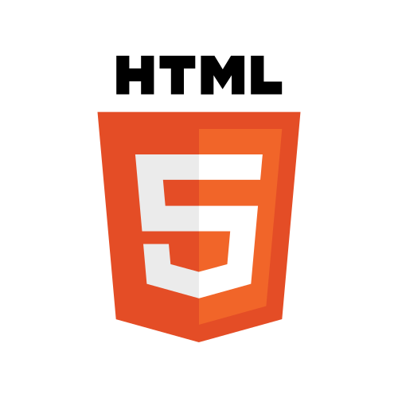
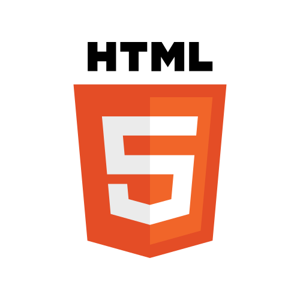

Software Engineer | Spark Energy
Software Engineer | Craneware
This role exposed me to a wide range of technologies and gave me a great opportunity to hone my skills. I worked on many high impact projects, ranging from implementing a new authentication system for the entire product suite, feature delivery, addressing critical security issues to rewriting and enhancing legacy front end code into performant Angular modules.
I performed extensive code reviews and I always tried to include links to blogs or documentation along with any suggestions. Although this was more time consuming, it was very satisfying to see its impact on subsequent pull requests. I led a team of interns to rewrite legacy front end code into Angular 6, and liaised with UX and product management to simultaneously deliver enhancements. This was a great opportunity to mentor and nurture the interns' skills.
When developing new features I followed the TDD approach of starting with unit tests. This provides me with a solid foundation from which I can write clean, efficient and expressive code which I can safely refactor for improved readability and structure. I enjoy using many features of a range of programming paradigms and I understand the benefits of different approaches. I have read books about OOP design patterns and taken courses in functional programming, each having a profound impact in how I write code.
Physics Bsc Hons | The University of Edinburgh
My time at university gave me a very solid grounding in mathematics and logical thinking. It also taught me how to approach problems in intelligent and novel ways. I focused on programming based classes and tackled challenges such as efficiently simulating complex systems (including a quantum processor), creating machine learning based prediction models, and statistical data analysis.
Secondary School | St Johns RC Academy
My achievements at school also include being awarded the best grades in my year and winning the school Dux medal.
| Subject | Level | Grade |
|---|---|---|
| Physics | Adv. Higher | A |
| Spanish | Adv. Higher | A |
| Maths | Adv. Higher | A |
| Chemistry | Higher | A |
| English | Higher | B |